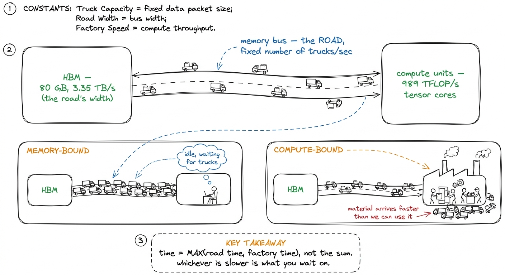
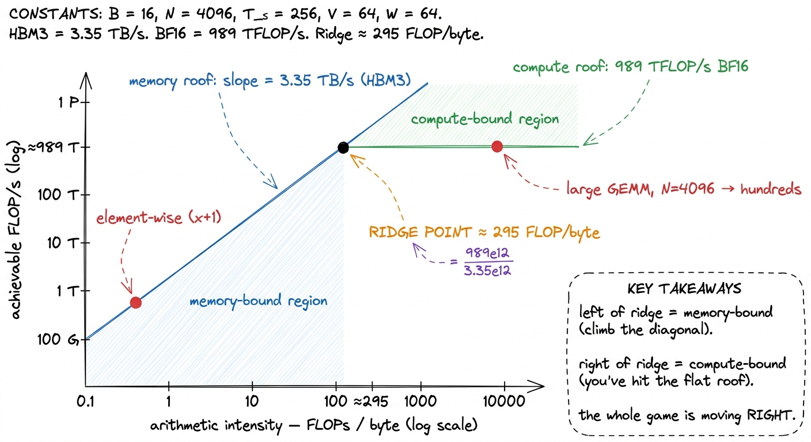
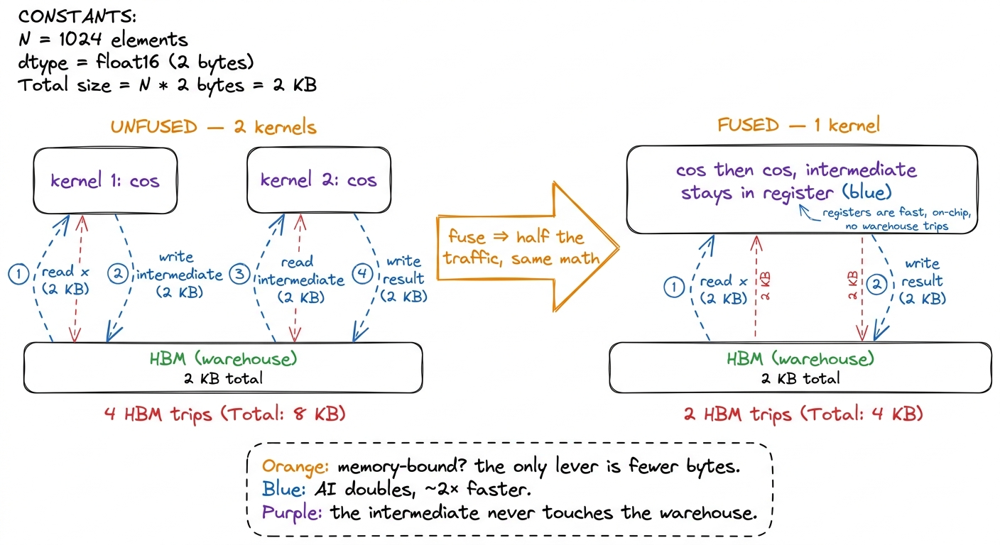

Arithmetic intensity AI
Every kernel you will ever write moves bytes and does math, and the ratio between those two — how much math you extract per byte you move — is the single number that decides whether your kernel can possibly be fast. It has a name: arithmetic intensity (AI), the FLOPs performed per byte moved between memory levels. It is not a tuning knob you turn at the end. It is a property of your algorithm and your data layout, and it is fixed before you write a single instruction. Learn to compute it on a napkin and you can predict the regime of a kernel — compute-bound or memory-bound — before you compile it.
This article is the arithmetic behind the three regimes. There we introduced the ridge point as a magic number, ≈295 FLOPs per byte on an H100, and waved at where it comes from. Here we derive it, work the intensity for the two workloads that matter — GEMM and element-wise — and show that every rung of the GEMM ladder is, underneath the SASS and the shared-memory tricks, one relentless campaign to raise this one number.
The definition, and why it is a ratio
Arithmetic intensity is a fraction:
FLOPs performed
AI = ─────────────────────────────
bytes moved (loads + stores)The numerator counts the useful floating-point work. The denominator counts traffic — every byte read from and written to the memory level you are bottlenecked on, which for most kernels means High-Bandwidth Memory (HBM), the 80 GB of HBM3 sitting off-die.1 You can compute AI at any level of the hierarchy — HBM↔chip, L2↔SM, SMEM↔registers. The one that matters is the level you are actually starved at. For a naive kernel that is HBM; for a well-tiled kernel the bottleneck can move up the pyramid to SMEM bandwidth, which is exactly the sign that your HBM tiling worked. The units are FLOPs per byte, and the whole reason the quantity is useful is that both of its ingredients are also hardware ceilings.
An H100 SXM5 can sustain about 989 TFLOP/s of BF16 through its tensor cores, and it can pull about 3.35 TB/s from HBM3.2 These are the realistic, sparsity-free tensor-core figures. Datasheet headline numbers roughly double them by assuming 2:4 structured sparsity you almost never have in practice. Always benchmark against the number you can actually reach. Put those two ceilings side by side and you get the machine's balance point:
ridge point = 989e12 FLOP/s / 3.35e12 B/s ≈ 295 FLOPs / byteThis is the ridge point: the arithmetic intensity at which the compute ceiling and the bandwidth ceiling cross. Below it, the memory system runs out of bandwidth before the tensor cores run out of work — you are memory-bound. Above it, the tensor cores are the wall — you are compute-bound. A kernel that does fewer than ~295 FLOPs for every byte it touches cannot saturate the tensor cores no matter how you write the math, because the memory system physically cannot feed them fast enough.

figure rendering · The roofline. The ridge point is just peak-FLOP/s divided by peak-bandWorked example 1: element-wise is hopeless
Take the simplest kernel imaginable, an element-wise y = x + 1 over an N × N FP32 matrix. Count both ingredients honestly.
The math: one add per element, so N² FLOPs.
The traffic: you read x (N² floats × 4 bytes) and write y (another N² × 4 bytes). That is 8N² bytes.
AI = N² / 8N² = 0.125 FLOPs / byteEven if we generously count the read and the write as a single fused round-trip and measure in "elements" rather than bytes, it comes out to roughly 0.5 FLOPs per byte — the number quoted in the three regimes.3 The exact figure wobbles with how you count: multiply-vs-add, whether the compiler fuses the load and store, FP32 vs BF16. What never wobbles is the order of magnitude — element-wise ops live at fractions of a FLOP per byte, and the ridge sits at hundreds. Nothing closes that gap. Either way you are hundreds of times below the ridge point. This kernel will run at a low single-digit percentage of peak FLOP/s and at very nearly peak HBM bandwidth, and there is no code you can write to change that. The N² adds are free; the 8N² bytes of traffic are the entire cost.
This is why fusion is the highest-leverage move in the memory-bound world. If you follow x + 1 immediately by a cos, doing them as two separate kernels moves the intermediate matrix out to HBM and back — doubling the traffic for the same math, halving the intensity. Fuse them into one kernel and the intermediate never leaves the registers; you pay one round-trip instead of two and roughly double your effective intensity. A fused cos().cos() costs almost exactly what a single cos() costs, because both are gated by the one unavoidable read-and-write, not by the trig.
Worked example 2: GEMM, and why N is everything
Now the workload the whole site is built around: C = A · B for square N × N matrices.
The math is cubic. Each of the N² output elements needs a dot product of length N — one multiply and one add per term — so:
FLOPs ≈ 2 · N³The minimum traffic is quadratic. You must read A and B and write C: three N² matrices, 4 bytes each in FP32:
bytes ≈ 3 · N² · 4 = 12 N²Divide them and the N² cancels beautifully against the N³:
AI ≈ 2N³ / 12N² = N / 6 FLOPs / byteGEMM's arithmetic intensity grows linearly with N. That single fact is the reason large matrix multiply is the friendliest workload on the GPU. For a real problem — Simon Boehm's 4092² benchmark does 2 · 4092³ + 4092² ≈ 137 GFLOPs against a 268 MB minimum transfer — the ratio is in the hundreds even at the theoretical floor.4 The N/6 figure is the ideal intensity, assuming each matrix is read from HBM exactly once. cuBLAS moves roughly 500 MB rather than the 268 MB floor on that benchmark, so its real achieved intensity is around 245 FLOPs/byte — still comfortably compute-bound, but a reminder that no kernel hits the theoretical minimum traffic. For N = 4096 the ideal N/6 is on the order of hundreds to thousands of FLOPs per byte, well past the ridge. Big GEMMs are compute-bound. This is good news: it means the ceiling we are racing toward is 989 TFLOP/s, not 3.35 TB/s.
But — and this is the entire point of the ladder — that N/6 is the intensity of the algorithm, achievable only if every byte of A and B is read from HBM exactly once. The naive kernel does nothing of the sort.

figure rendering · Reuse is the whole trick. Staging a tile in shared memory lets many thThe naive kernel throws its intensity away
Look at what kernel 1 actually does. It assigns one thread per output element, and each thread reads a full row of A and a full column of B straight from global memory. Element A[m][k] is re-read by every one of the N threads in row m; B[k][n] is re-read by every thread in column n. Instead of moving 12N² bytes, the kernel moves on the order of 2N³ — it re-fetches the operands N times over.
Plug that real traffic back into the fraction and the N in the numerator cancels the N³ in the denominator differently:
AI_naive ≈ 2N³ FLOPs / (2N³ · 4 bytes) = 0.25 FLOP / byte (in FP32)The algorithm's intensity was N/6, potentially thousands. The naive implementation's intensity is a flat fraction of a FLOP per byte — Simon Boehm clocks it at roughly 0.5, well under 1 and right down in the element-wise basin; the exact value slides with how you count fused loads and boundary effects, but it is a small constant, independent of N. It took a gloriously compute-bound problem and, through sheer lack of reuse, dragged it hundreds of times below the ridge into the memory-bound basin. That is why the profiler on kernel 1 lights up red on memory workload analysis, and why the kernel reaches a humiliating 1.3% of cuBLAS. The math was never the problem. The bytes were.
Every rung of the ladder is an intensity move
Here is the reframing that makes the whole GEMM ladder click into place. Read the milestones not as a list of unrelated tricks but as a monotonic climb in arithmetic intensity — each step reads each byte of A and B fewer times, shrinking the denominator while the numerator stays fixed at 2N³.
- Coalescing (kernel 2,
8.5%) does not change reuse at all — it only makes each HBM transaction fully used instead of throwing away most of a128 Bcache line.5 Coalescing improves the efficiency of the bytes you move rather than the count — but on a memory-bound kernel that is nearly the same thing, because wasted bytes still consume bandwidth. It roughly quadruples throughput for a one-line change to howmandnmap to threads, the best payoff-to-effort ratio on the ladder. - Shared-memory tiling (kernel 3,
12.8%) is the first true intensity win: a block loads a tile ofAandBinto on-chip shared memory (SMEM) — up to228 KiBper SM — once, and every thread in the block reuses it, so each HBM byte now feeds many FLOPs. - 1D and 2D blocktiling (kernels 4–5,
36.5%then68.7%) push further by having each thread compute many output elements. Going from 1 to 64 results per thread cuts the HBM reads per result dramatically and the SMEM reads per result too — that is intensity climbing at both levels of the pyramid at once. - Vectorized
float4loads (78.4%) and autotuning (84.8%) squeeze the transactions and the tile shapes. - Warptiling (
93.7%) organizes reuse at the warp granularity so the register file —256 KBper SM — holds the innermost accumulators, the last and fastest level of reuse.
Notice the shape of that progression: 1.3 → 8.5 → 12.8 → 36.5 → 68.7 → 78.4 → 84.8 → 93.7. It is the story of the denominator of one fraction shrinking. Nobody ever added FLOPs; the kernel does the same 2N³ multiply-adds at every rung. What changed, every single time, is how many bytes it took to feed them.

figure rendering · The GEMM ladder read as a walk up the memory pyramid: each rung servesThe one number to internalize
When you sit down to a new kernel, do the napkin arithmetic first. Count the FLOPs, count the bytes you must move, divide. Compare the result to the ridge point of your hardware — ≈295 on an H100, and climbing on every new generation because compute grows faster than bandwidth. That comparison tells you your regime before you have written a line, and the regime tells you which optimizations can possibly help.
If the algorithm's intensity is far above the ridge, as with a large GEMM, then any gap between you and cuBLAS is your implementation throwing intensity away — re-reading operands, wasting cache lines, spilling registers — and the entire job is to claw that intensity back up the pyramid. If the algorithm's intensity is far below the ridge, as with anything element-wise, then no cleverness inside the kernel will save you and the only real lever is to move fewer bytes: fuse, use lower precision, restructure the whole pipeline so the data never round-trips.
That is the discipline the rest of this site runs on. In the next section we put the roofline model itself on the wall — the picture whose corner is that 295 — and then we start climbing the GEMM ladder from 1.3% of cuBLAS to 93.7%, watching one number, arithmetic intensity, rise at every step.